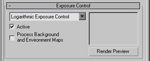

Layers
All newly created objects will take advantage of the Layers feature.
Newly created lights will get their Renderable flag set to ByLayer, allowing you to exclude lights from the renderer in a group. Ideal for large projects involving many lights in many places.
Material Editor
The material editor of 3ds max will always default to use the new Architectural Material, dedicated to achieve photo realistic renderings easily.
The Reflectance / Transmittance information will be shown by default to facilitate the small changes you may need to make for Radiosity lighting.
The SuperSampling settings will be set to use the new Global Super Sampler feature, allowing you to manage the quality of many materials from the rendering dialog more easily.
Materials assigned to an instanced object will propagate to every instances of that object automatically.
Lights
The Lights will default to Cast Shadows and their shadow generator will default to the Advanced Raytraced Shadows.
All created lights will share the same shadows settings as well by using the Global Settings feature.
This will facilitate the management of multiple light sources, allow light going through transparent objects and ensure accurate shadows for linear and area lights rendering.
Skylights, Linear and Area lights will by default, Store their direct illumination to the Radiosity mesh.
Daylight
Daylight assemblies will always default to the IES sun and IES sky, the sun being predefined to a Raytraced Shadows shadow generator.
Rendering


The rendering settings for a physically based lighting setup will already be set.
The Default Scanline renderer will be assigned as default and the Logarithmic Exposure Control will be used.
The Radiosity engine will be assigned to the Advanced Lighting panel.
Motion Blur

For best default performance, none of the objects will generate motion blur effects by default.
Cloning
Design and visualization projects typically involve a lot of objects repeated within the same scene. For this reason, the default mode for cloning an object will be Instance.
Select by Name
To make the navigation easier with data imported from DWG files (AutoCAD), the Display Subtree and Select Dependents options of the Select by Name dialog is enabled by default.
i-drop

Downloaded files from i-drop sites will be copied to the /downloads/ folder of your 3ds max install.
Inverse Kinematics
Manipulating Luminaires built with HD IK chains can sometimes cause "locks" or "jerky" results with with the Max defaults settings.
This is normal in the context of animation: the equation solving is performed between frames and not intended to provide good motion while interactively manipulating a character.
For applications involving Luminaires, we need a high level of interactivity in the viewport and less animation/key framing support. This setting will make the HDIK solver work better with interactive manipulations.
Viewport Shading
The interactive viewport of 3ds max is well suited for interactive environments where a few light sources are defined. As a result, the Daylight object and Photometric lights are typically flooding the interactive viewport with bright white color.
To resolve this, it is preferable to set the viewport shading to use what we call Default Lighting as opposed to using the lights from the scene. The DesignVIZ defaults enable that.
Real-World Texture Coordinates
There are two workflows for texture mapping objects, controlled by the "Use Real-World Texture Coordinates" preference. Design visualization projects typically involve textures on a known size, such as an image of bricks. For this reason the default value of this toggle is ON, which means that objects and modifiers which generate texture coordinates scale them to the real-world size of the object. This also turns on the "Use Real-World Scale" option for 2d texture maps in the material editor, which lets you specify the size of 2d texture maps.